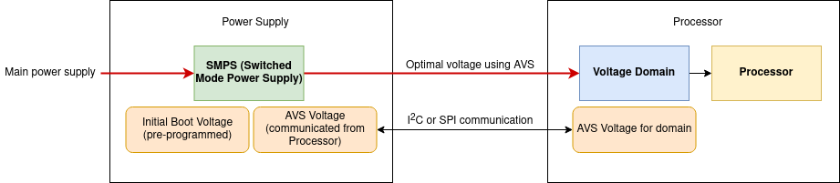

3.1.1.15. Adaptive Voltage Scaling (AVS) Class 0¶
Adaptive Voltage Scaling (AVS) Class 0 is a procedure for lowering the voltage on certain device power rails. The optimal voltage for each supported rail is determined after analysis in the factory. This value is written in the device eFuse where it can be read from registers.
AVS can be enabled by software after primary boot. In SDK, AVS is enabled by software after primary boot in tispl.bin
Supported Devices
J721E EVM
J7200 EVM
AM65x EVM
3.1.1.15.1. Hardware Architecture¶
A voltage domain is a group of modules sharing the same power supply voltage. Each voltage domain is powered externally by a dedicated power-supply voltage rail interfaced to the device. Implementation of AVS essentially involves the communication between a voltage domain and the PMIC (Power Management IC) of a device. At power-up, each rail ramps up to the initial boot voltage that is set in the voltage register in the boot sequence. After the processor is powered up, it reads its own AVS registers and communicates to the PMIC to lower the respective voltage if applicable. The PMIC then changes the output voltage to requested one at a pre-defined rate until it gets a new request, and is then powered down or a reset is applied. If a reset is applied, the nominal boot voltage will be read and applied.
Quick links for relevant AVS documentation:
3.1.1.15.2. Configuration options¶
Note
AVS driver and its dependencies are enabled by default in the SDK images, so this section can be skipped in that case
Start the U-Boot configuration tool:
$ make menuconfig ARCH=arm
--> Device Drivers
--> Multifunction device drivers
<*> AVS class 0 support for K3 devices
3.1.1.15.3. Driver¶
Refer to drivers/misc/k3_avs.c in U-Boot source tree for the AVS driver. The AVS voltage for a supported rail is an eFuse VID value located in its corresponding VTM module register. The supported rails for each device along with register names are listed in the “AVS Support” section of the particular SoC’s TRM.